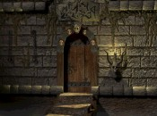
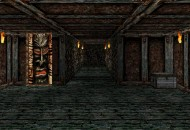
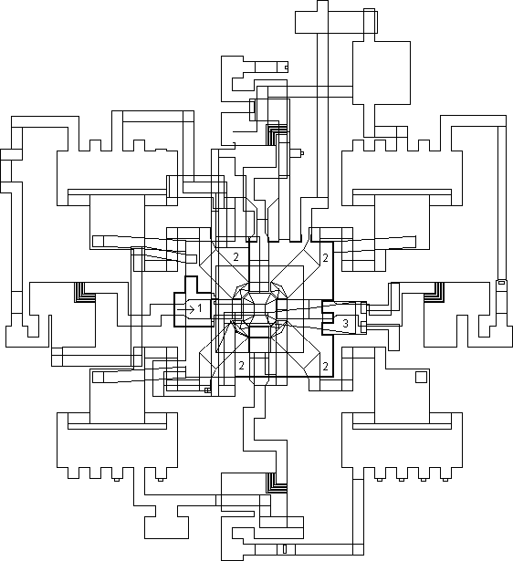

| 1 | You start here, the Fire Lord is in this room, talk to him to get a quest. |
| 2 | This is a huge room, lots of nice fighting in here. |
| 3 | After falling down a few floors you will be in room 3, here you can kill the "pharaoph" look-a-like which should give you a small taste for what is to come later on in the game. |
Leave us a message at: mgrounds@hotmail.com